#Hello and thank you for joining Sid and me to review some insights tha twe were able to gain with the data that this committee has given us. We will be covering all of the initial questions that you all posed in the beginning of this process, as well as some other potentially valuable information that could be of use to you all here at Budweiser.
#Question 1: How many breweries are present in each state?
#File Upload
brew=read.csv("C:/Users/seans/Desktop/DDS/Unit 8 and 9 Case Study 1/Breweries.csv", header=TRUE, sep=",")
saveRDS(brew, file ="brew.Rds")
readRDS(brew, file ="brew.Rds")## Brew_ID Name City State
## 1 1 NorthGate Brewing Minneapolis MN
## 2 2 Against the Grain Brewery Louisville KY
## 3 3 Jack's Abby Craft Lagers Framingham MA
## 4 4 Mike Hess Brewing Company San Diego CA
## 5 5 Fort Point Beer Company San Francisco CA
## 6 6 COAST Brewing Company Charleston SC
## 7 7 Great Divide Brewing Company Denver CO
## 8 8 Tapistry Brewing Bridgman MI
## 9 9 Big Lake Brewing Holland MI
## 10 10 The Mitten Brewing Company Grand Rapids MI
## 11 11 Brewery Vivant Grand Rapids MI
## 12 12 Petoskey Brewing Petoskey MI
## 13 13 Blackrocks Brewery Marquette MI
## 14 14 Perrin Brewing Company Comstock Park MI
## 15 15 Witch's Hat Brewing Company South Lyon MI
## 16 16 Founders Brewing Company Grand Rapids MI
## 17 17 Flat 12 Bierwerks Indianapolis IN
## 18 18 Tin Man Brewing Company Evansville IN
## 19 19 Black Acre Brewing Co. Indianapolis IN
## 20 20 Brew Link Brewing Plainfield IN
## 21 21 Bare Hands Brewery Granger IN
## 22 22 Three Pints Brewing Martinsville IN
## 23 23 Four Fathers Brewing Valparaiso IN
## 24 24 Indiana City Brewing Indianapolis IN
## 25 25 Burn 'Em Brewing Michigan City IN
## 26 26 Sun King Brewing Company Indianapolis IN
## 27 27 Evil Czech Brewery Mishawaka IN
## 28 28 450 North Brewing Company Columbus IN
## 29 29 Taxman Brewing Company Bargersville IN
## 30 30 Cedar Creek Brewery Seven Points TX
## 31 31 SanTan Brewing Company Chandler AZ
## 32 32 Boulevard Brewing Company Kansas City MO
## 33 33 James Page Brewing Company Stevens Point WI
## 34 34 The Dudes' Brewing Company Torrance CA
## 35 35 Ballast Point Brewing Company San Diego CA
## 36 36 Anchor Brewing Company San Francisco CA
## 37 37 Figueroa Mountain Brewing Company Buellton CA
## 38 38 Avery Brewing Company Boulder CO
## 39 39 Twisted X Brewing Company Dripping Springs TX
## 40 40 Gonzo's BiggDogg Brewing Kalamazoo MI
## 41 41 Big Muddy Brewing Murphysboro IL
## 42 42 Lost Nation Brewing East Fairfield VT
## 43 43 Rising Tide Brewing Company Portland ME
## 44 44 Rivertowne Brewing Company Export PA
## 45 45 Revolution Brewing Company Chicago IL
## 46 46 Tallgrass Brewing Company Manhattan KS
## 47 47 Sixpoint Craft Ales Brooklyn NY
## 48 48 White Birch Brewing Hooksett NH
## 49 49 Firestone Walker Brewing Company Paso Robles CA
## 50 50 SweetWater Brewing Company Atlanta GA
## 51 51 Flying Mouse Brewery Troutville VA
## 52 52 Upslope Brewing Company Boulder CO
## 53 53 Pipeworks Brewing Company Chicago IL
## 54 54 Bent Brewstillery Roseville MN
## 55 55 Flesk Brewing Company Lombard IL
## 56 56 Pollyanna Brewing Company Lemont IL
## 57 57 BuckleDown Brewing Lyons IL
## 58 58 Destihl Brewery Bloomington IL
## 59 59 Summit Brewing Company St. Paul MN
## 60 60 Latitude 42 Brewing Company Portage MI
## 61 61 4 Hands Brewing Company Saint Louis MO
## 62 62 Surly Brewing Company Brooklyn Center MN
## 63 63 Against The Grain Brewery Louisville KY
## 64 64 Crazy Mountain Brewing Company Edwards CO
## 65 65 SlapShot Brewing Company Chicago IL
## 66 66 Mikerphone Brewing Chicago IL
## 67 67 Freetail Brewing Company San Antonio TX
## 68 68 3 Daughters Brewing St Petersburg FL
## 69 69 Red Shedman Farm Brewery and Hop... Mt. Airy MD
## 70 70 Appalachian Mountain Brewery Boone NC
## 71 71 Birdsong Brewing Company Charlotte NC
## 72 72 Union Craft Brewing Baltimore MD
## 73 73 Atwater Brewery Detroit MI
## 74 74 Ale Asylum Madison WI
## 75 75 Two Brothers Brewing Company Warrenville IL
## 76 76 Bent Paddle Brewing Company Duluth MN
## 77 77 Bell's Brewery Kalamazoo MI
## 78 78 Blue Owl Brewing Austin TX
## 79 79 Speakasy Ales & Lagers San Francisco CA
## 80 80 Black Tooth Brewing Company Sheridan WY
## 81 81 Hopworks Urban Brewery Portland OR
## 82 82 Epic Brewing Denver CO
## 83 83 New Belgium Brewing Company Fort Collins CO
## 84 84 Sierra Nevada Brewing Company Chico CA
## 85 85 Keweenaw Brewing Company Houghton MI
## 86 86 Brewery Terra Firma Traverse City MI
## 87 87 Grey Sail Brewing Company Westerly RI
## 88 88 Kirkwood Station Brewing Company Kirkwood MO
## 89 89 Goose Island Brewing Company Chicago IL
## 90 90 Broad Brook Brewing LLC East Windsor CT
## 91 91 The Lion Brewery Wilkes-Barre PA
## 92 92 Madtree Brewing Company Cincinnati OH
## 93 93 Jackie O's Pub & Brewery Athens OH
## 94 94 Rhinegeist Brewery Cincinnati OH
## 95 95 Warped Wing Brewing Company Dayton OH
## 96 96 Blackrocks Brewery Marquette MA
## 97 97 Catawba Valley Brewing Company Morganton NC
## 98 98 Tröegs Brewing Company Hershey PA
## 99 99 Mission Brewery San Diego CA
## 100 100 Christian Moerlein Brewing Company Cincinnati OH
## 101 101 West Sixth Brewing Lexington KY
## 102 102 Coastal Extreme Brewing Company Newport RI
## 103 103 King Street Brewing Company Anchorage AK
## 104 104 Beer Works Brewery Lowell MA
## 105 105 Lone Tree Brewing Company Lone Tree CO
## 106 106 Four String Brewing Company Columbus OH
## 107 107 Glabrous Brewing Company Pineland ME
## 108 108 Bonfire Brewing Company Eagle CO
## 109 109 Thomas Hooker Brewing Company Bloomfield CT
## 110 110 Woodstock Inn, Station & Brewery North Woodstock NH
## 111 111 Renegade Brewing Company Denver CO
## 112 112 Mother Earth Brew Company Vista CA
## 113 113 Black Market Brewing Company Temecula CA
## 114 114 Vault Brewing Company Yardley PA
## 115 115 Jailbreak Brewing Company Laurel MD
## 116 116 Smartmouth Brewing Company Norfolk VA
## 117 117 Base Camp Brewing Co. Portland OR
## 118 118 Alameda Brewing Portland OR
## 119 119 Southern Star Brewing Company Conroe TX
## 120 120 Steamworks Brewing Company Durango CO
## 121 121 Horny Goat Brew Pub Milwaukee WI
## 122 122 Cheboygan Brewing Company Cheboygan MI
## 123 123 Center of the Universe Brewing C... Ashland VA
## 124 124 Ipswich Ale Brewery Ipswich MA
## 125 125 Griffin Claw Brewing Company Birmingham MI
## 126 126 Karbach Brewing Company Houston TX
## 127 127 Uncle Billy's Brewery and Smokeh... Austin TX
## 128 128 Deep Ellum Brewing Company Dallas TX
## 129 129 Real Ale Brewing Company Blanco TX
## 130 130 Straub Brewery St Mary's PA
## 131 131 Shebeen Brewing Company Wolcott CT
## 132 132 Stevens Point Brewery Stevens Point WI
## 133 133 Weston Brewing Company Weston MO
## 134 134 Southern Prohibition Brewing Com... Hattiesburg MS
## 135 135 Minhas Craft Brewery Monroe WI
## 136 136 Pug Ryan's Brewery Dillon CO
## 137 137 Hops & Grains Brewing Company Austin TX
## 138 138 Sietsema Orchards and Cider Mill Ada MI
## 139 139 Summit Brewing Company St Paul MN
## 140 140 Core Brewing & Distilling Company Springdale AR
## 141 141 Independence Brewing Company Austin TX
## 142 142 Cigar City Brewing Company Tampa FL
## 143 143 Third Street Brewhouse Cold Spring MN
## 144 144 Narragansett Brewing Company Providence RI
## 145 145 Grimm Brothers Brewhouse Loveland CO
## 146 146 Cisco Brewers Nantucket MA
## 147 147 Angry Minnow Hayward WI
## 148 148 Platform Beer Company Cleveland OH
## 149 149 Odyssey Beerwerks Arvada CO
## 150 150 Lonerider Brewing Company Raleigh NC
## 151 151 Oakshire Brewing Eugene OR
## 152 152 Fort Pitt Brewing Company Latrobe PA
## 153 153 Tin Roof Brewing Company Baton Rouge LA
## 154 154 Three Creeks Brewing Sisters OR
## 155 155 2 Towns Ciderhouse Corvallis OR
## 156 156 Caldera Brewing Company Ashland OR
## 157 157 Greenbrier Valley Brewing Company Lewisburg WV
## 158 158 Phoenix Ale Brewery Phoenix AZ
## 159 159 Lumberyard Brewing Company Flagstaff AZ
## 160 160 Uinta Brewing Company Salt Lake City UT
## 161 161 Four Peaks Brewing Company Tempe AZ
## 162 162 Martin House Brewing Company Fort Worth TX
## 163 163 Right Brain Brewery Traverse City MI
## 164 164 Sly Fox Brewing Company Phoenixville PA
## 165 165 Round Guys Brewing Lansdale PA
## 166 166 Great Crescent Brewery Aurora IN
## 167 167 Oskar Blues Brewery Longmont CO
## 168 168 Boxcar Brewing Company West Chester PA
## 169 169 High Hops Brewery Windsor CO
## 170 170 Crooked Fence Brewing Company Garden City ID
## 171 171 Everybody's Brewing White Salmon WA
## 172 172 Anderson Valley Brewing Company Boonville CA
## 173 173 Fiddlehead Brewing Company Shelburne VT
## 174 174 Evil Twin Brewing Brooklyn NY
## 175 175 New Orleans Lager & Ale Brewing ... New Orleans LA
## 176 176 Spiteful Brewing Company Chicago IL
## 177 177 Rahr & Sons Brewing Company Fort Worth TX
## 178 178 18th Street Brewery Gary IN
## 179 179 Cambridge Brewing Company Cambridge MA
## 180 180 Carolina Brewery Pittsboro NC
## 181 181 Frog Level Brewing Company Waynesville NC
## 182 182 Wild Wolf Brewing Company Nellysford VA
## 183 183 COOP Ale Works Oklahoma City OK
## 184 184 Seventh Son Brewing Company Columbus OH
## 185 185 Oasis Texas Brewing Company Austin TX
## 186 186 Vander Mill Ciders Spring Lake MI
## 187 187 St. Julian Winery Paw Paw MI
## 188 188 Pedernales Brewing Company Fredericksburg TX
## 189 189 Mother's Brewing Springfield MO
## 190 190 Modern Monks Brewery Lincoln NE
## 191 191 Two Beers Brewing Company Seattle WA
## 192 192 Snake River Brewing Company Jackson WY
## 193 193 Capital Brewery Middleton WI
## 194 194 Anthem Brewing Company Oklahoma City OK
## 195 195 Goodlife Brewing Co. Bend OR
## 196 196 Breakside Brewery Portland OR
## 197 197 Goose Island Brewery Company Chicago IL
## 198 198 Burnside Brewing Co. Portland OR
## 199 199 Hop Valley Brewing Company Springfield OR
## 200 200 Worthy Brewing Company Bend OR
## 201 201 Occidental Brewing Company Portland OR
## 202 202 Fearless Brewing Company Estacada OR
## 203 203 Upland Brewing Company Bloomington IN
## 204 204 Mehana Brewing Co. Hilo HI
## 205 205 Hawai'i Nui Brewing Co. Hilo HI
## 206 206 People's Brewing Company Lafayette IN
## 207 207 Fort George Brewery Astoria OR
## 208 208 Branchline Brewing Company San Antonio TX
## 209 209 Kalona Brewing Company Kalona IA
## 210 210 Modern Times Beer San Diego CA
## 211 211 Temperance Beer Company Evanston IL
## 212 212 Wisconsin Brewing Company Verona WI
## 213 213 Crow Peak Brewing Company Spearfish SD
## 214 214 Grapevine Craft Brewery Farmers Branch TX
## 215 215 Buffalo Bayou Brewing Company Houston TX
## 216 216 Texian Brewing Co. Richmond TX
## 217 217 Orpheus Brewing Atlanta GA
## 218 218 Forgotten Boardwalk Cherry Hill NJ
## 219 219 Laughing Dog Brewing Company Ponderay ID
## 220 220 Bozeman Brewing Company Bozeman MT
## 221 221 Big Choice Brewing Broomfield CO
## 222 222 Big Storm Brewing Company Odessa FL
## 223 223 Carton Brewing Company Atlantic Highlands NJ
## 224 224 Midnight Sun Brewing Company Anchorage AK
## 225 225 Fat Head's Brewery Middleburg Heights OH
## 226 226 Refuge Brewery Temecula CA
## 227 227 Chatham Brewing Chatham NY
## 228 228 DC Brau Brewing Company Washington DC
## 229 229 Geneva Lake Brewing Company Lake Geneva WI
## 230 230 Rochester Mills Brewing Company Rochester MI
## 231 231 Cape Ann Brewing Company Gloucester MA
## 232 232 Borderlands Brewing Company Tucson AZ
## 233 233 College Street Brewhouse and Pub Lake Havasu City AZ
## 234 234 Joseph James Brewing Company Henderson NV
## 235 235 Harpoon Brewery Boston MA
## 236 236 Back East Brewing Company Bloomfield CT
## 237 237 Champion Brewing Company Charlottesville VA
## 238 238 Devil's Backbone Brewing Company Lexington VA
## 239 239 Newburgh Brewing Company Newburgh NY
## 240 240 Wiseacre Brewing Company Memphis TN
## 241 241 Golden Road Brewing Los Angeles CA
## 242 242 New Republic Brewing Company College Station TX
## 243 243 Infamous Brewing Company Austin TX
## 244 244 Two Henrys Brewing Company Plant City FL
## 245 245 Lift Bridge Brewing Company Stillwater MN
## 246 246 Lucky Town Brewing Company Jackson MS
## 247 247 Quest Brewing Company Greenville SC
## 248 248 Creature Comforts Athens GA
## 249 249 Half Full Brewery Stamford CT
## 250 250 Southampton Publick House Southampton NY
## [ reached 'max' / getOption("max.print") -- omitted 308 rows ]#Packages Used
library(tidyverse)## -- Attaching packages --------------------------------------- tidyverse 1.2.1 --## v ggplot2 3.2.1 v purrr 0.3.3
## v tibble 2.1.3 v dplyr 0.8.3
## v tidyr 1.0.0 v stringr 1.4.0
## v readr 1.3.1 v forcats 0.4.0## -- Conflicts ------------------------------------------ tidyverse_conflicts() --
## x dplyr::filter() masks stats::filter()
## x dplyr::lag() masks stats::lag()library(dplyr)
library(ggplot2)
library(GGally)## Registered S3 method overwritten by 'GGally':
## method from
## +.gg ggplot2##
## Attaching package: 'GGally'## The following object is masked from 'package:dplyr':
##
## nasalibrary(ggthemes)
library(doBy)
library(e1071)
library(kableExtra)##
## Attaching package: 'kableExtra'## The following object is masked from 'package:dplyr':
##
## group_rowslibrary(knitr)
library(ggmap)## Google's Terms of Service: https://cloud.google.com/maps-platform/terms/.## Please cite ggmap if you use it! See citation("ggmap") for details.library(maps)##
## Attaching package: 'maps'## The following object is masked from 'package:purrr':
##
## maplibrary(openintro)## Please visit openintro.org for free statistics materials##
## Attaching package: 'openintro'## The following object is masked from 'package:ggplot2':
##
## diamonds## The following objects are masked from 'package:datasets':
##
## cars, treeslibrary(stringr)
library(usmap)
library(ggplot2)
library(class)
library(e1071)
library(caret)## Loading required package: lattice##
## Attaching package: 'lattice'## The following object is masked from 'package:openintro':
##
## lsegments##
## Attaching package: 'caret'## The following object is masked from 'package:openintro':
##
## dotPlot## The following object is masked from 'package:purrr':
##
## liftbrew%>%ggplot(mapping=aes(x=State, stat="count"))+geom_bar()+ggtitle("Brewery Count by State")+theme_economist()+theme(axis.text.x=element_text(angle=90))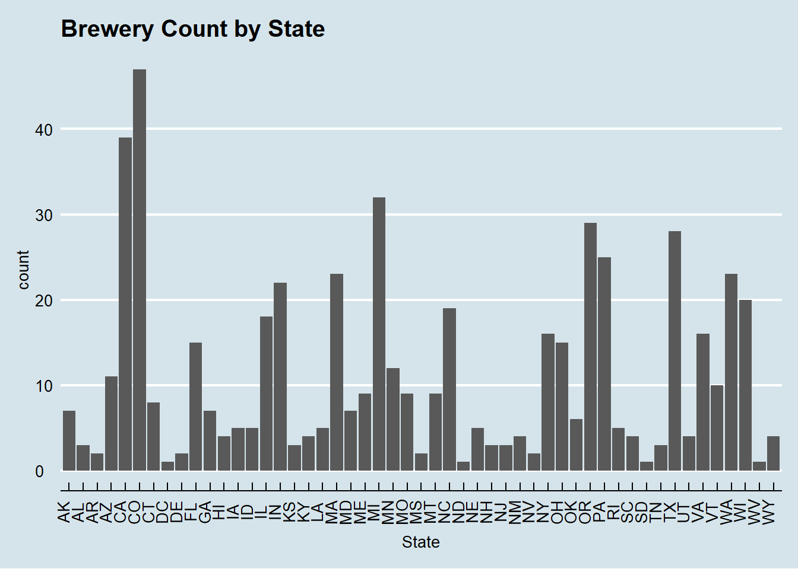
#Question 2: Merge beer data with the breweries data. Print the first 6 observations and the last six observations to check the merged file.
#The code below merges the two datasets
#Upload Beers.csv
beer=read.csv("C:/Users/seans/Desktop/DDS/Unit 8 and 9 Case Study 1/Beers.csv")
saveRDS(brew, file ="beer.Rds")
readRDS(brew, file ="beer.Rds")## Brew_ID Name City State
## 1 1 NorthGate Brewing Minneapolis MN
## 2 2 Against the Grain Brewery Louisville KY
## 3 3 Jack's Abby Craft Lagers Framingham MA
## 4 4 Mike Hess Brewing Company San Diego CA
## 5 5 Fort Point Beer Company San Francisco CA
## 6 6 COAST Brewing Company Charleston SC
## 7 7 Great Divide Brewing Company Denver CO
## 8 8 Tapistry Brewing Bridgman MI
## 9 9 Big Lake Brewing Holland MI
## 10 10 The Mitten Brewing Company Grand Rapids MI
## 11 11 Brewery Vivant Grand Rapids MI
## 12 12 Petoskey Brewing Petoskey MI
## 13 13 Blackrocks Brewery Marquette MI
## 14 14 Perrin Brewing Company Comstock Park MI
## 15 15 Witch's Hat Brewing Company South Lyon MI
## 16 16 Founders Brewing Company Grand Rapids MI
## 17 17 Flat 12 Bierwerks Indianapolis IN
## 18 18 Tin Man Brewing Company Evansville IN
## 19 19 Black Acre Brewing Co. Indianapolis IN
## 20 20 Brew Link Brewing Plainfield IN
## 21 21 Bare Hands Brewery Granger IN
## 22 22 Three Pints Brewing Martinsville IN
## 23 23 Four Fathers Brewing Valparaiso IN
## 24 24 Indiana City Brewing Indianapolis IN
## 25 25 Burn 'Em Brewing Michigan City IN
## 26 26 Sun King Brewing Company Indianapolis IN
## 27 27 Evil Czech Brewery Mishawaka IN
## 28 28 450 North Brewing Company Columbus IN
## 29 29 Taxman Brewing Company Bargersville IN
## 30 30 Cedar Creek Brewery Seven Points TX
## 31 31 SanTan Brewing Company Chandler AZ
## 32 32 Boulevard Brewing Company Kansas City MO
## 33 33 James Page Brewing Company Stevens Point WI
## 34 34 The Dudes' Brewing Company Torrance CA
## 35 35 Ballast Point Brewing Company San Diego CA
## 36 36 Anchor Brewing Company San Francisco CA
## 37 37 Figueroa Mountain Brewing Company Buellton CA
## 38 38 Avery Brewing Company Boulder CO
## 39 39 Twisted X Brewing Company Dripping Springs TX
## 40 40 Gonzo's BiggDogg Brewing Kalamazoo MI
## 41 41 Big Muddy Brewing Murphysboro IL
## 42 42 Lost Nation Brewing East Fairfield VT
## 43 43 Rising Tide Brewing Company Portland ME
## 44 44 Rivertowne Brewing Company Export PA
## 45 45 Revolution Brewing Company Chicago IL
## 46 46 Tallgrass Brewing Company Manhattan KS
## 47 47 Sixpoint Craft Ales Brooklyn NY
## 48 48 White Birch Brewing Hooksett NH
## 49 49 Firestone Walker Brewing Company Paso Robles CA
## 50 50 SweetWater Brewing Company Atlanta GA
## 51 51 Flying Mouse Brewery Troutville VA
## 52 52 Upslope Brewing Company Boulder CO
## 53 53 Pipeworks Brewing Company Chicago IL
## 54 54 Bent Brewstillery Roseville MN
## 55 55 Flesk Brewing Company Lombard IL
## 56 56 Pollyanna Brewing Company Lemont IL
## 57 57 BuckleDown Brewing Lyons IL
## 58 58 Destihl Brewery Bloomington IL
## 59 59 Summit Brewing Company St. Paul MN
## 60 60 Latitude 42 Brewing Company Portage MI
## 61 61 4 Hands Brewing Company Saint Louis MO
## 62 62 Surly Brewing Company Brooklyn Center MN
## 63 63 Against The Grain Brewery Louisville KY
## 64 64 Crazy Mountain Brewing Company Edwards CO
## 65 65 SlapShot Brewing Company Chicago IL
## 66 66 Mikerphone Brewing Chicago IL
## 67 67 Freetail Brewing Company San Antonio TX
## 68 68 3 Daughters Brewing St Petersburg FL
## 69 69 Red Shedman Farm Brewery and Hop... Mt. Airy MD
## 70 70 Appalachian Mountain Brewery Boone NC
## 71 71 Birdsong Brewing Company Charlotte NC
## 72 72 Union Craft Brewing Baltimore MD
## 73 73 Atwater Brewery Detroit MI
## 74 74 Ale Asylum Madison WI
## 75 75 Two Brothers Brewing Company Warrenville IL
## 76 76 Bent Paddle Brewing Company Duluth MN
## 77 77 Bell's Brewery Kalamazoo MI
## 78 78 Blue Owl Brewing Austin TX
## 79 79 Speakasy Ales & Lagers San Francisco CA
## 80 80 Black Tooth Brewing Company Sheridan WY
## 81 81 Hopworks Urban Brewery Portland OR
## 82 82 Epic Brewing Denver CO
## 83 83 New Belgium Brewing Company Fort Collins CO
## 84 84 Sierra Nevada Brewing Company Chico CA
## 85 85 Keweenaw Brewing Company Houghton MI
## 86 86 Brewery Terra Firma Traverse City MI
## 87 87 Grey Sail Brewing Company Westerly RI
## 88 88 Kirkwood Station Brewing Company Kirkwood MO
## 89 89 Goose Island Brewing Company Chicago IL
## 90 90 Broad Brook Brewing LLC East Windsor CT
## 91 91 The Lion Brewery Wilkes-Barre PA
## 92 92 Madtree Brewing Company Cincinnati OH
## 93 93 Jackie O's Pub & Brewery Athens OH
## 94 94 Rhinegeist Brewery Cincinnati OH
## 95 95 Warped Wing Brewing Company Dayton OH
## 96 96 Blackrocks Brewery Marquette MA
## 97 97 Catawba Valley Brewing Company Morganton NC
## 98 98 Tröegs Brewing Company Hershey PA
## 99 99 Mission Brewery San Diego CA
## 100 100 Christian Moerlein Brewing Company Cincinnati OH
## 101 101 West Sixth Brewing Lexington KY
## 102 102 Coastal Extreme Brewing Company Newport RI
## 103 103 King Street Brewing Company Anchorage AK
## 104 104 Beer Works Brewery Lowell MA
## 105 105 Lone Tree Brewing Company Lone Tree CO
## 106 106 Four String Brewing Company Columbus OH
## 107 107 Glabrous Brewing Company Pineland ME
## 108 108 Bonfire Brewing Company Eagle CO
## 109 109 Thomas Hooker Brewing Company Bloomfield CT
## 110 110 Woodstock Inn, Station & Brewery North Woodstock NH
## 111 111 Renegade Brewing Company Denver CO
## 112 112 Mother Earth Brew Company Vista CA
## 113 113 Black Market Brewing Company Temecula CA
## 114 114 Vault Brewing Company Yardley PA
## 115 115 Jailbreak Brewing Company Laurel MD
## 116 116 Smartmouth Brewing Company Norfolk VA
## 117 117 Base Camp Brewing Co. Portland OR
## 118 118 Alameda Brewing Portland OR
## 119 119 Southern Star Brewing Company Conroe TX
## 120 120 Steamworks Brewing Company Durango CO
## 121 121 Horny Goat Brew Pub Milwaukee WI
## 122 122 Cheboygan Brewing Company Cheboygan MI
## 123 123 Center of the Universe Brewing C... Ashland VA
## 124 124 Ipswich Ale Brewery Ipswich MA
## 125 125 Griffin Claw Brewing Company Birmingham MI
## 126 126 Karbach Brewing Company Houston TX
## 127 127 Uncle Billy's Brewery and Smokeh... Austin TX
## 128 128 Deep Ellum Brewing Company Dallas TX
## 129 129 Real Ale Brewing Company Blanco TX
## 130 130 Straub Brewery St Mary's PA
## 131 131 Shebeen Brewing Company Wolcott CT
## 132 132 Stevens Point Brewery Stevens Point WI
## 133 133 Weston Brewing Company Weston MO
## 134 134 Southern Prohibition Brewing Com... Hattiesburg MS
## 135 135 Minhas Craft Brewery Monroe WI
## 136 136 Pug Ryan's Brewery Dillon CO
## 137 137 Hops & Grains Brewing Company Austin TX
## 138 138 Sietsema Orchards and Cider Mill Ada MI
## 139 139 Summit Brewing Company St Paul MN
## 140 140 Core Brewing & Distilling Company Springdale AR
## 141 141 Independence Brewing Company Austin TX
## 142 142 Cigar City Brewing Company Tampa FL
## 143 143 Third Street Brewhouse Cold Spring MN
## 144 144 Narragansett Brewing Company Providence RI
## 145 145 Grimm Brothers Brewhouse Loveland CO
## 146 146 Cisco Brewers Nantucket MA
## 147 147 Angry Minnow Hayward WI
## 148 148 Platform Beer Company Cleveland OH
## 149 149 Odyssey Beerwerks Arvada CO
## 150 150 Lonerider Brewing Company Raleigh NC
## 151 151 Oakshire Brewing Eugene OR
## 152 152 Fort Pitt Brewing Company Latrobe PA
## 153 153 Tin Roof Brewing Company Baton Rouge LA
## 154 154 Three Creeks Brewing Sisters OR
## 155 155 2 Towns Ciderhouse Corvallis OR
## 156 156 Caldera Brewing Company Ashland OR
## 157 157 Greenbrier Valley Brewing Company Lewisburg WV
## 158 158 Phoenix Ale Brewery Phoenix AZ
## 159 159 Lumberyard Brewing Company Flagstaff AZ
## 160 160 Uinta Brewing Company Salt Lake City UT
## 161 161 Four Peaks Brewing Company Tempe AZ
## 162 162 Martin House Brewing Company Fort Worth TX
## 163 163 Right Brain Brewery Traverse City MI
## 164 164 Sly Fox Brewing Company Phoenixville PA
## 165 165 Round Guys Brewing Lansdale PA
## 166 166 Great Crescent Brewery Aurora IN
## 167 167 Oskar Blues Brewery Longmont CO
## 168 168 Boxcar Brewing Company West Chester PA
## 169 169 High Hops Brewery Windsor CO
## 170 170 Crooked Fence Brewing Company Garden City ID
## 171 171 Everybody's Brewing White Salmon WA
## 172 172 Anderson Valley Brewing Company Boonville CA
## 173 173 Fiddlehead Brewing Company Shelburne VT
## 174 174 Evil Twin Brewing Brooklyn NY
## 175 175 New Orleans Lager & Ale Brewing ... New Orleans LA
## 176 176 Spiteful Brewing Company Chicago IL
## 177 177 Rahr & Sons Brewing Company Fort Worth TX
## 178 178 18th Street Brewery Gary IN
## 179 179 Cambridge Brewing Company Cambridge MA
## 180 180 Carolina Brewery Pittsboro NC
## 181 181 Frog Level Brewing Company Waynesville NC
## 182 182 Wild Wolf Brewing Company Nellysford VA
## 183 183 COOP Ale Works Oklahoma City OK
## 184 184 Seventh Son Brewing Company Columbus OH
## 185 185 Oasis Texas Brewing Company Austin TX
## 186 186 Vander Mill Ciders Spring Lake MI
## 187 187 St. Julian Winery Paw Paw MI
## 188 188 Pedernales Brewing Company Fredericksburg TX
## 189 189 Mother's Brewing Springfield MO
## 190 190 Modern Monks Brewery Lincoln NE
## 191 191 Two Beers Brewing Company Seattle WA
## 192 192 Snake River Brewing Company Jackson WY
## 193 193 Capital Brewery Middleton WI
## 194 194 Anthem Brewing Company Oklahoma City OK
## 195 195 Goodlife Brewing Co. Bend OR
## 196 196 Breakside Brewery Portland OR
## 197 197 Goose Island Brewery Company Chicago IL
## 198 198 Burnside Brewing Co. Portland OR
## 199 199 Hop Valley Brewing Company Springfield OR
## 200 200 Worthy Brewing Company Bend OR
## 201 201 Occidental Brewing Company Portland OR
## 202 202 Fearless Brewing Company Estacada OR
## 203 203 Upland Brewing Company Bloomington IN
## 204 204 Mehana Brewing Co. Hilo HI
## 205 205 Hawai'i Nui Brewing Co. Hilo HI
## 206 206 People's Brewing Company Lafayette IN
## 207 207 Fort George Brewery Astoria OR
## 208 208 Branchline Brewing Company San Antonio TX
## 209 209 Kalona Brewing Company Kalona IA
## 210 210 Modern Times Beer San Diego CA
## 211 211 Temperance Beer Company Evanston IL
## 212 212 Wisconsin Brewing Company Verona WI
## 213 213 Crow Peak Brewing Company Spearfish SD
## 214 214 Grapevine Craft Brewery Farmers Branch TX
## 215 215 Buffalo Bayou Brewing Company Houston TX
## 216 216 Texian Brewing Co. Richmond TX
## 217 217 Orpheus Brewing Atlanta GA
## 218 218 Forgotten Boardwalk Cherry Hill NJ
## 219 219 Laughing Dog Brewing Company Ponderay ID
## 220 220 Bozeman Brewing Company Bozeman MT
## 221 221 Big Choice Brewing Broomfield CO
## 222 222 Big Storm Brewing Company Odessa FL
## 223 223 Carton Brewing Company Atlantic Highlands NJ
## 224 224 Midnight Sun Brewing Company Anchorage AK
## 225 225 Fat Head's Brewery Middleburg Heights OH
## 226 226 Refuge Brewery Temecula CA
## 227 227 Chatham Brewing Chatham NY
## 228 228 DC Brau Brewing Company Washington DC
## 229 229 Geneva Lake Brewing Company Lake Geneva WI
## 230 230 Rochester Mills Brewing Company Rochester MI
## 231 231 Cape Ann Brewing Company Gloucester MA
## 232 232 Borderlands Brewing Company Tucson AZ
## 233 233 College Street Brewhouse and Pub Lake Havasu City AZ
## 234 234 Joseph James Brewing Company Henderson NV
## 235 235 Harpoon Brewery Boston MA
## 236 236 Back East Brewing Company Bloomfield CT
## 237 237 Champion Brewing Company Charlottesville VA
## 238 238 Devil's Backbone Brewing Company Lexington VA
## 239 239 Newburgh Brewing Company Newburgh NY
## 240 240 Wiseacre Brewing Company Memphis TN
## 241 241 Golden Road Brewing Los Angeles CA
## 242 242 New Republic Brewing Company College Station TX
## 243 243 Infamous Brewing Company Austin TX
## 244 244 Two Henrys Brewing Company Plant City FL
## 245 245 Lift Bridge Brewing Company Stillwater MN
## 246 246 Lucky Town Brewing Company Jackson MS
## 247 247 Quest Brewing Company Greenville SC
## 248 248 Creature Comforts Athens GA
## 249 249 Half Full Brewery Stamford CT
## 250 250 Southampton Publick House Southampton NY
## [ reached 'max' / getOption("max.print") -- omitted 308 rows ]#Changing the names of the Brewery ID column to the same name for the Join
colnames(brew)[colnames(brew)=="Brew_ID"]<-"Brewery_ID"
colnames(beer)[colnames(beer)=="Brewery_id"]<-"Brewery_ID"
#Differentiate Names
colnames(beer)[colnames(beer)=="Beer Name"]<-"Beer_Name"
colnames(brew)[colnames(brew)=="Brewery Name"]<-"Brewery_Name"
#Merge
beerbybrew=merge(beer,brew,by="Brewery_ID", all=TRUE)
head(beerbybrew)## Brewery_ID Name.x Beer_ID ABV IBU
## 1 1 Get Together 2692 0.045 50
## 2 1 Maggie's Leap 2691 0.049 26
## 3 1 Wall's End 2690 0.048 19
## 4 1 Pumpion 2689 0.060 38
## 5 1 Stronghold 2688 0.060 25
## 6 1 Parapet ESB 2687 0.056 47
## Style Ounces Name.y
## 1 American IPA 16 NorthGate Brewing
## 2 Milk / Sweet Stout 16 NorthGate Brewing
## 3 English Brown Ale 16 NorthGate Brewing
## 4 Pumpkin Ale 16 NorthGate Brewing
## 5 American Porter 16 NorthGate Brewing
## 6 Extra Special / Strong Bitter (ESB) 16 NorthGate Brewing
## City State
## 1 Minneapolis MN
## 2 Minneapolis MN
## 3 Minneapolis MN
## 4 Minneapolis MN
## 5 Minneapolis MN
## 6 Minneapolis MNtail(beerbybrew)## Brewery_ID Name.x Beer_ID ABV IBU
## 2405 556 Pilsner Ukiah 98 0.055 NA
## 2406 557 Heinnieweisse Weissebier 52 0.049 NA
## 2407 557 Snapperhead IPA 51 0.068 NA
## 2408 557 Moo Thunder Stout 50 0.049 NA
## 2409 557 Porkslap Pale Ale 49 0.043 NA
## 2410 558 Urban Wilderness Pale Ale 30 0.049 NA
## Style Ounces Name.y
## 2405 German Pilsener 12 Ukiah Brewing Company
## 2406 Hefeweizen 12 Butternuts Beer and Ale
## 2407 American IPA 12 Butternuts Beer and Ale
## 2408 Milk / Sweet Stout 12 Butternuts Beer and Ale
## 2409 American Pale Ale (APA) 12 Butternuts Beer and Ale
## 2410 English Pale Ale 12 Sleeping Lady Brewing Company
## City State
## 2405 Ukiah CA
## 2406 Garrattsville NY
## 2407 Garrattsville NY
## 2408 Garrattsville NY
## 2409 Garrattsville NY
## 2410 Anchorage AK#The output below shows the first six and last six rows of the merged data set.#The code below is used to identify the number of missing values in each column.
colSums(is.na(beerbybrew))## Brewery_ID Name.x Beer_ID ABV IBU Style
## 0 0 0 62 1005 0
## Ounces Name.y City State
## 0 0 0 0#ABV is missing 62 values, and IBU is mising 1005 values. Even if we need to filter out all 1005 misisng IBU observations, we would still have 1,405. If the ABV missing values do not overlap, we would still have 1,343, which is a significant smaple size.#Question 4: Compute the median alcohol content and international bitterness unit for each state. Plot a bar chart to compare.
#Changing the ABV value to numeric
beerbybrew$ABV<-as.numeric(as.character(beerbybrew$ABV))
beerbybrew1=beerbybrew%>%filter(!is.na(ABV))
colSums(is.na(beerbybrew1))## Brewery_ID Name.x Beer_ID ABV IBU Style
## 0 0 0 0 943 0
## Ounces Name.y City State
## 0 0 0 0#ABV data grouped by State
abvmed1=beerbybrew1%>%group_by(State)
#Box Plot of ABV by State
abvmed1%>%ggplot(mapping=aes(x=State, y=ABV))+geom_boxplot()+theme(axis.text.x=element_text(angle=90))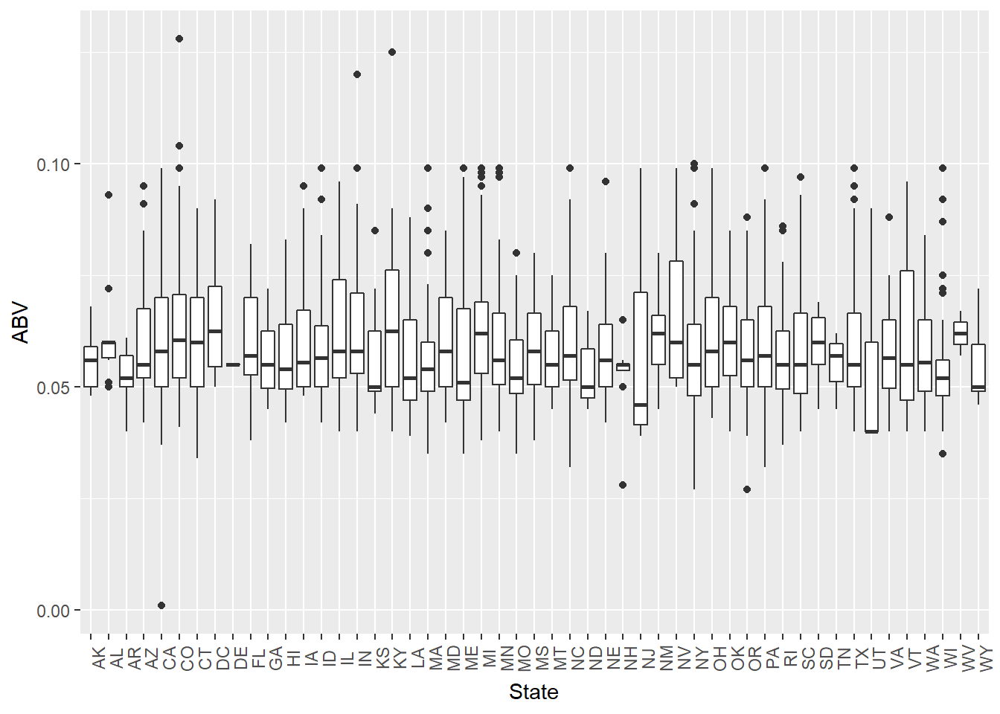
###Median of ABV by state###
abvmed=summaryBy(ABV~State, data=beerbybrew1, FUN=median)
abvmed## State ABV.median
## 1 AK 0.0560
## 2 AL 0.0600
## 3 AR 0.0520
## 4 AZ 0.0550
## 5 CA 0.0580
## 6 CO 0.0605
## 7 CT 0.0600
## 8 DC 0.0625
## 9 DE 0.0550
## 10 FL 0.0570
## 11 GA 0.0550
## 12 HI 0.0540
## 13 IA 0.0555
## 14 ID 0.0565
## 15 IL 0.0580
## 16 IN 0.0580
## 17 KS 0.0500
## 18 KY 0.0625
## 19 LA 0.0520
## 20 MA 0.0540
## 21 MD 0.0580
## 22 ME 0.0510
## 23 MI 0.0620
## 24 MN 0.0560
## 25 MO 0.0520
## 26 MS 0.0580
## 27 MT 0.0550
## 28 NC 0.0570
## 29 ND 0.0500
## 30 NE 0.0560
## 31 NH 0.0550
## 32 NJ 0.0460
## 33 NM 0.0620
## 34 NV 0.0600
## 35 NY 0.0550
## 36 OH 0.0580
## 37 OK 0.0600
## 38 OR 0.0560
## 39 PA 0.0570
## 40 RI 0.0550
## 41 SC 0.0550
## 42 SD 0.0600
## 43 TN 0.0570
## 44 TX 0.0550
## 45 UT 0.0400
## 46 VA 0.0565
## 47 VT 0.0550
## 48 WA 0.0555
## 49 WI 0.0520
## 50 WV 0.0620
## 51 WY 0.0500###Bar chart of median ABV by State###
abvmed%>%ggplot(mapping=aes(x=State, y=ABV.median))+geom_col()+theme(axis.text.x=element_text(angle=90))+ggtitle("Median ABV by State")+labs(x="State", y="Median ABV")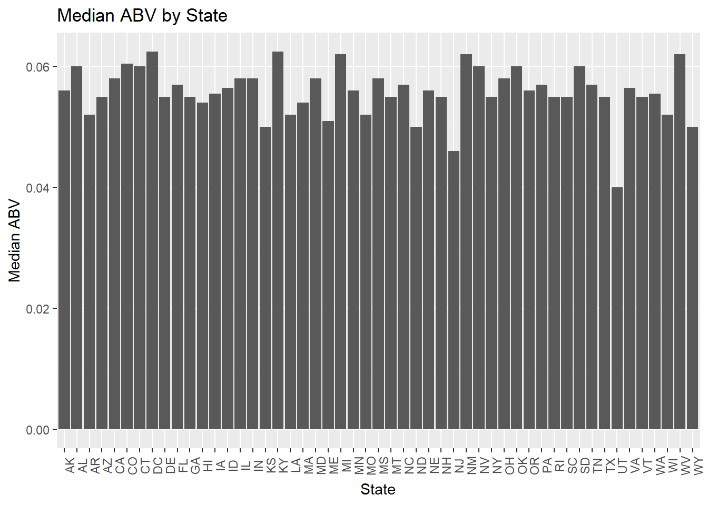
#Median IBU by state
### Median IBU by State###
beerbybrew$IBU<-as.numeric(as.character(beerbybrew$IBU))
beerbybrew2=beerbybrew%>%filter(!is.na(IBU))
#IBU data grouped by State
ibumed1=beerbybrew2%>%group_by(State)
#Box Plot of IBU by State
ibumed1%>%ggplot(mapping=aes(x=State, y=IBU))+geom_boxplot()+theme(axis.text.x=element_text(angle=90))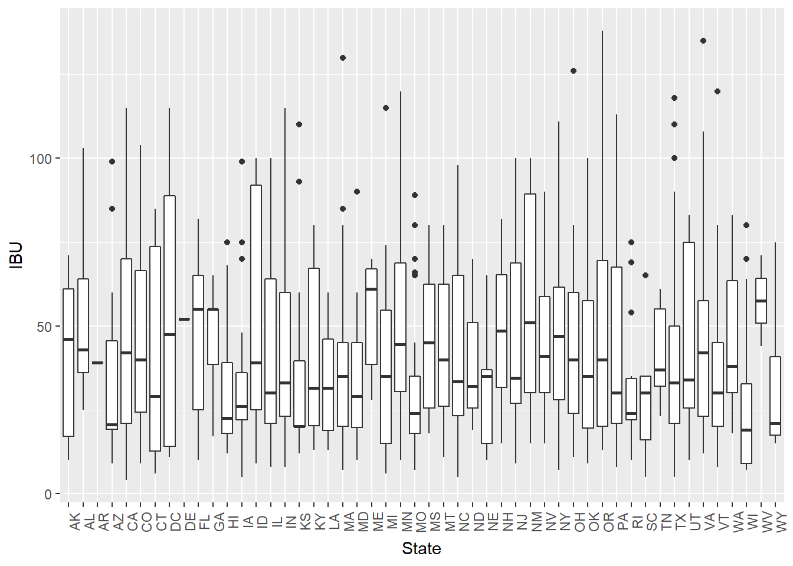
###Median of IBU by state###
ibumed=summaryBy(IBU~State, data=beerbybrew2, FUN=median)
#ibumed
###Bar chart of median IBU by State###
ibumed%>%ggplot(mapping=aes(x=State, y=IBU.median))+geom_col()+theme(axis.text.x=element_text(angle=90))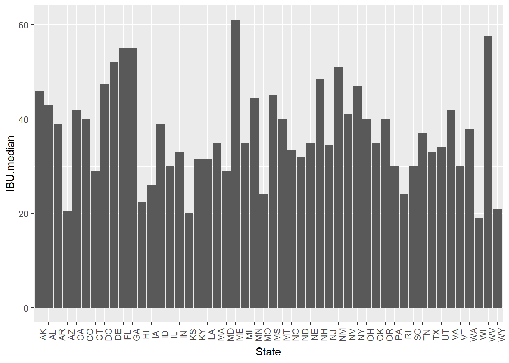
#Question #5: Which state has the maximum alcoholic (ABV) beer? Which state has the most bitter (IBU) beer?
#Which state has the maximum ABV beer? Wich state has the highest IBU beer?
kable(beerbybrew[which.max(beerbybrew$ABV),])| Brewery_ID | Name.x | Beer_ID | ABV | IBU | Style | Ounces | Name.y | City | State | |
|---|---|---|---|---|---|---|---|---|---|---|
| 375 | 52 | Lee Hill Series Vol. 5 - Belgian Style Quadrupel Ale | 2565 | 0.128 | NA | Quadrupel (Quad) | 19.2 | Upslope Brewing Company | Boulder | CO |
kable(beerbybrew[which.max(beerbybrew$IBU),])| Brewery_ID | Name.x | Beer_ID | ABV | IBU | Style | Ounces | Name.y | City | State | |
|---|---|---|---|---|---|---|---|---|---|---|
| 1857 | 375 | Bitter Bitch Imperial IPA | 980 | 0.082 | 138 | American Double / Imperial IPA | 12 | Astoria Brewing Company | Astoria | OR |
#According to the data, the state with the maximum ABV is Colorado with 12.8%. The state with the highest IBU value is Oregon with 138 IBUs.#Question 6: Comment on the statistics and distribution of the ABV variable
#Summary of the data
summary(beerbybrew$ABV)## Min. 1st Qu. Median Mean 3rd Qu. Max. NA's
## 0.00100 0.05000 0.05600 0.05977 0.06700 0.12800 62#Histogram of the ABV variable
hist(beerbybrew$ABV, main="ABV", xlab="Alcohol by Volume")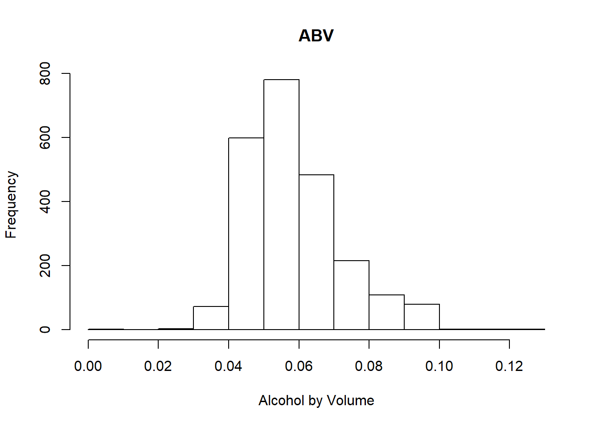
#Looking at the data and the histogram, it seems that a vast majority of the beers have an ABV of less than 7%. Any value over 10% ABV seems to be extremely infrequent, which of course makes sence since beer is not supposed to be an extremely high ABV beverage. #Question 7: Is there an apparent relationship between the bitterness of the beer and its alcoholic content? Draw a scatter plot. Make your best judgment of a relationship and explain your answer.
#Is there an apparent relationship between the bitterness of the beer and its alcoholic content? Draw a scatter plot.
beerbybrew%>%ggplot(mapping=aes(x=ABV, y=IBU))+geom_point()+geom_smooth()+theme_economist()## `geom_smooth()` using method = 'gam' and formula 'y ~ s(x, bs = "cs")'## Warning: Removed 1005 rows containing non-finite values (stat_smooth).## Warning: Removed 1005 rows containing missing values (geom_point).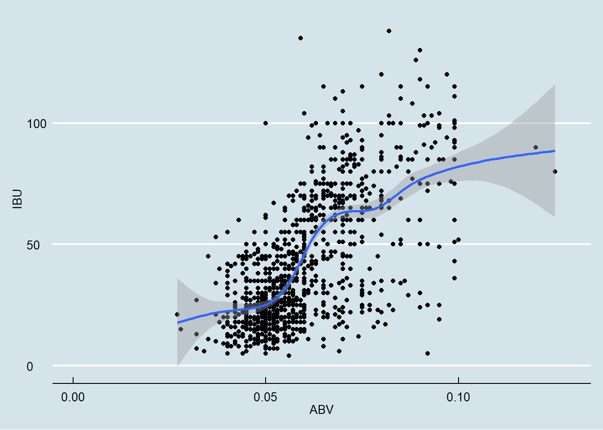
#Looking at the scatter plot below, it does appear that there is a positively correlated relationship between ABV and IBU. While it's not a perfectly straight line, the line below does show that there is in fact a relationship. #Question 8: Budweiser would also like to investigate the difference with respect to IBU and ABV between IPAs (India Pale Ales) and other types of Ale (any beer with “Ale” in its name other than IPA). You decide to use KNN clustering to investigate this relationship. Provide statistical evidence one way or the other. You can of course assume your audience is comfortable with percentages … KNN is very easy to understand.
#Budweiser would also like to investigate the difference with respect to IBU and ABV between IPAs (India Pale Ales) and other types of Ale.
#Creating factors of "India Pale Ale," "other Ale,' or "Other Type."
beerbybrew$BeerType <- ifelse(grepl("Ale$", beerbybrew$Style, ignore.case = T), "Other Ale",
ifelse(grepl("IPA$", beerbybrew$Style, ignore.case = T ), "India Pale Ale", "Other Type"))
beerbybrew$BeerType<-as.factor(as.character(beerbybrew$BeerType))
beerbybrew$ABV<-as.numeric(as.character(beerbybrew$ABV))
beerbybrew$IBU<-as.numeric(as.character(beerbybrew$IBU))
#head(beerbybrew)
#Selecting for only IPAs and Other Ales.
beerbybrew2=beerbybrew%>%filter(!is.na(BeerType) & !is.na(IBU) & !is.na(ABV))
beerbybrew2=beerbybrew%>%filter(BeerType=="India Pale Ale" | BeerType=="Other Ale")#Here we are going to use a model called k-NN (k-Nearest Neighbors) to predict whether a given beer would be classified as an "Indian Pale Ale" or "other Ale." In short, this model plots an unknown data point in the midst of known data, then compares the number of "neighbors" it has, classifying it as the data type with the most neighbors.
#The following code groups the beers by "India Pale Ale," "Other Ale," and "Other Type."
beerbybrew$BeerType <- ifelse(grepl("Ale$", beerbybrew$Style, ignore.case = T), "Other Ale",
ifelse(grepl("IPA$", beerbybrew$Style, ignore.case = T ), "India Pale Ale", "Other Type"))
#Change BeerType to a factor and IBU/ABV to numeric
beerbybrew$BeerType<-as.factor(as.character(beerbybrew$BeerType))
beerbybrew$ABV<-as.numeric(as.character(beerbybrew$ABV))
beerbybrew$IBU<-as.numeric(as.character(beerbybrew$IBU))
#head(beerbybrew)
#Filtering out any "na" values as well as the "Other Ales."
beerbybrew2=beerbybrew%>%filter(!is.na(BeerType) & !is.na(IBU) & !is.na(ABV))
beerbybrew2=beerbybrew%>%filter(BeerType=="India Pale Ale" | BeerType=="Other Ale")
#KNN
set.seed(6)
splitPerc = .75
beerbybrew3 = beerbybrew2 %>% filter(BeerType == "India Pale Ale" | BeerType == "Other Ale")
#summary(beerbybrew3)
beerbybrew3 = droplevels(beerbybrew3, exclude = "Other Type")
#summary(beerbybrew3)
beerbybrew3 <- beerbybrew3 %>% na.omit()
trainIndices = sample(1:dim(beerbybrew3)[1],round(splitPerc * dim(beerbybrew3)[1]))
train = beerbybrew3[trainIndices,]
test = beerbybrew3[-trainIndices,]
#Testing the accuracy of differnet k-values
# k = 3
classifications = knn(train[,c(4,5)],test[,c(4,5)],train$BeerType, prob = TRUE, k = 3)
table(classifications,test$BeerType)##
## classifications India Pale Ale Other Ale
## India Pale Ale 78 22
## Other Ale 7 86confusionMatrix(table(classifications,test$BeerType))## Confusion Matrix and Statistics
##
##
## classifications India Pale Ale Other Ale
## India Pale Ale 78 22
## Other Ale 7 86
##
## Accuracy : 0.8497
## 95% CI : (0.7914, 0.897)
## No Information Rate : 0.5596
## P-Value [Acc > NIR] : < 2e-16
##
## Kappa : 0.7008
##
## Mcnemar's Test P-Value : 0.00933
##
## Sensitivity : 0.9176
## Specificity : 0.7963
## Pos Pred Value : 0.7800
## Neg Pred Value : 0.9247
## Prevalence : 0.4404
## Detection Rate : 0.4041
## Detection Prevalence : 0.5181
## Balanced Accuracy : 0.8570
##
## 'Positive' Class : India Pale Ale
## # k = 5
classifications = knn(train[,c(4,5)],test[,c(4,5)],train$BeerType, prob = TRUE, k = 5)
table(test$BeerType,classifications)## classifications
## India Pale Ale Other Ale
## India Pale Ale 80 5
## Other Ale 21 87confusionMatrix(table(test$BeerType,classifications))## Confusion Matrix and Statistics
##
## classifications
## India Pale Ale Other Ale
## India Pale Ale 80 5
## Other Ale 21 87
##
## Accuracy : 0.8653
## 95% CI : (0.8089, 0.9101)
## No Information Rate : 0.5233
## P-Value [Acc > NIR] : < 2.2e-16
##
## Kappa : 0.7321
##
## Mcnemar's Test P-Value : 0.003264
##
## Sensitivity : 0.7921
## Specificity : 0.9457
## Pos Pred Value : 0.9412
## Neg Pred Value : 0.8056
## Prevalence : 0.5233
## Detection Rate : 0.4145
## Detection Prevalence : 0.4404
## Balanced Accuracy : 0.8689
##
## 'Positive' Class : India Pale Ale
## # k = 10
classifications = knn(train[,c(4,5)],test[,c(4,5)],train$BeerType, prob = TRUE, k = 10)
table(test$BeerType,classifications)## classifications
## India Pale Ale Other Ale
## India Pale Ale 82 3
## Other Ale 21 87confusionMatrix(table(test$BeerType,classifications))## Confusion Matrix and Statistics
##
## classifications
## India Pale Ale Other Ale
## India Pale Ale 82 3
## Other Ale 21 87
##
## Accuracy : 0.8756
## 95% CI : (0.8206, 0.9187)
## No Information Rate : 0.5337
## P-Value [Acc > NIR] : < 2.2e-16
##
## Kappa : 0.7533
##
## Mcnemar's Test P-Value : 0.0005202
##
## Sensitivity : 0.7961
## Specificity : 0.9667
## Pos Pred Value : 0.9647
## Neg Pred Value : 0.8056
## Prevalence : 0.5337
## Detection Rate : 0.4249
## Detection Prevalence : 0.4404
## Balanced Accuracy : 0.8814
##
## 'Positive' Class : India Pale Ale
## # k = 20
classifications = knn(train[,c(4,5)],test[,c(4,5)],train$BeerType, prob = TRUE, k = 20)
table(test$BeerType,classifications)## classifications
## India Pale Ale Other Ale
## India Pale Ale 83 2
## Other Ale 21 87CM = confusionMatrix(table(test$BeerType,classifications))
CM$overall[1]## Accuracy
## 0.880829## Loop for many k and one training / test partition--determining the optimal number of k.
iterations=200
accs = data.frame(accuracy = numeric(iterations), k = numeric(iterations))
for(i in 1:iterations)
{
classifications = knn(train[,c(4,5)],test[,c(4,5)],train$BeerType, prob = TRUE, k = i)
table(test$BeerType,classifications)
CM = confusionMatrix(table(test$BeerType,classifications))
accs$accuracy[i] = CM$overall[1]
accs$k[i] = i
}
plot(accs$k,accs$accuracy, type = "l", xlab = "k", ylab="Accuracy")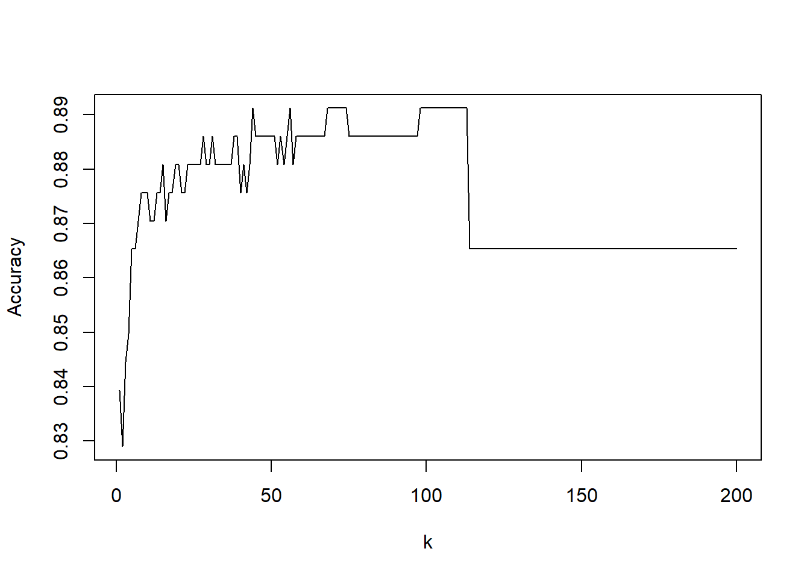
#k=105 since the accuracy graph seems to level off at a high point around there.
classifications = knn(train[,c(4,5)],test[,c(4,5)],train$BeerType, prob = TRUE, k = 75)
table(test$BeerType,classifications)## classifications
## India Pale Ale Other Ale
## India Pale Ale 80 5
## Other Ale 17 91CM = confusionMatrix(table(test$BeerType,classifications))
CM## Confusion Matrix and Statistics
##
## classifications
## India Pale Ale Other Ale
## India Pale Ale 80 5
## Other Ale 17 91
##
## Accuracy : 0.886
## 95% CI : (0.8325, 0.9272)
## No Information Rate : 0.5026
## P-Value [Acc > NIR] : < 2e-16
##
## Kappa : 0.7722
##
## Mcnemar's Test P-Value : 0.01902
##
## Sensitivity : 0.8247
## Specificity : 0.9479
## Pos Pred Value : 0.9412
## Neg Pred Value : 0.8426
## Prevalence : 0.5026
## Detection Rate : 0.4145
## Detection Prevalence : 0.4404
## Balanced Accuracy : 0.8863
##
## 'Positive' Class : India Pale Ale
## #In the graph on the right, we can see how the accuracy of the model changes with the given number of data points, or "neighbors," taken into account. As you can see, it plateaus shortly after 100 before dropping off. Because this range holds a relatively stable accuracy (and at the highest point), we ran a model with k=105. In the data output here you can see that the accuracy is almost 89%.#Question 9 - Other Insights - Niaeve Bayes
#We also tested wither a differnet model, the Naieve Bayes, would be a more accurate predictor. This model is different in that it uses given data to predict an uknown factor using probabilities that are calculated from the known data.
model = naiveBayes(beerbybrew3[,c(4,5)],beerbybrew3$BeerType)
table(predict(model,beerbybrew3[,c(4,5)]),beerbybrew3$BeerType)##
## India Pale Ale Other Ale
## India Pale Ale 331 52
## Other Ale 54 334CM = confusionMatrix(table(predict(model,beerbybrew3[,c(4,5)]),beerbybrew3$BeerType))
CM## Confusion Matrix and Statistics
##
##
## India Pale Ale Other Ale
## India Pale Ale 331 52
## Other Ale 54 334
##
## Accuracy : 0.8625
## 95% CI : (0.8362, 0.886)
## No Information Rate : 0.5006
## P-Value [Acc > NIR] : <2e-16
##
## Kappa : 0.725
##
## Mcnemar's Test P-Value : 0.9226
##
## Sensitivity : 0.8597
## Specificity : 0.8653
## Pos Pred Value : 0.8642
## Neg Pred Value : 0.8608
## Prevalence : 0.4994
## Detection Rate : 0.4293
## Detection Prevalence : 0.4968
## Balanced Accuracy : 0.8625
##
## 'Positive' Class : India Pale Ale
## iterations = 200
masterAcc = matrix(nrow = iterations)
splitPerc = .7 #Training / Test split Percentage
for(j in 1:iterations)
{
trainIndices = sample(1:dim(beerbybrew3)[1],round(splitPerc * dim(beerbybrew3)[1]))
train = beerbybrew3[trainIndices,]
test = beerbybrew3[-trainIndices,]
model = naiveBayes(train[,c(4,5)],as.factor(train$BeerType))
table(predict(model,test[,c(4,5)]),as.factor(test$BeerType))
CM = confusionMatrix(table(predict(model,test[,c(4,5)]),as.factor(test$BeerType)))
masterAcc[j] = CM$overall[1]
}
MeanAcc = colMeans(masterAcc)
MeanAcc## [1] 0.8601299#Below you can see that this model achieved a mean accuracy of approximately 86.3%--not quite as high as the accuracy we achieved from using the k-NN model. #Question 9 - Other Insights - ABV vs IBU by IPA or Other Ale
#This graph shows the relationship between ABV and IBu when diferentiating between IPAs and Other Ales.
beerbybrew2%>%ggplot(mapping=aes(x=ABV, y=IBU, color=BeerType))+geom_point()+geom_smooth()+ggtitle("ABV vs IBU")+theme_economist()## `geom_smooth()` using method = 'loess' and formula 'y ~ x'## Warning: Removed 490 rows containing non-finite values (stat_smooth).## Warning: Removed 490 rows containing missing values (geom_point).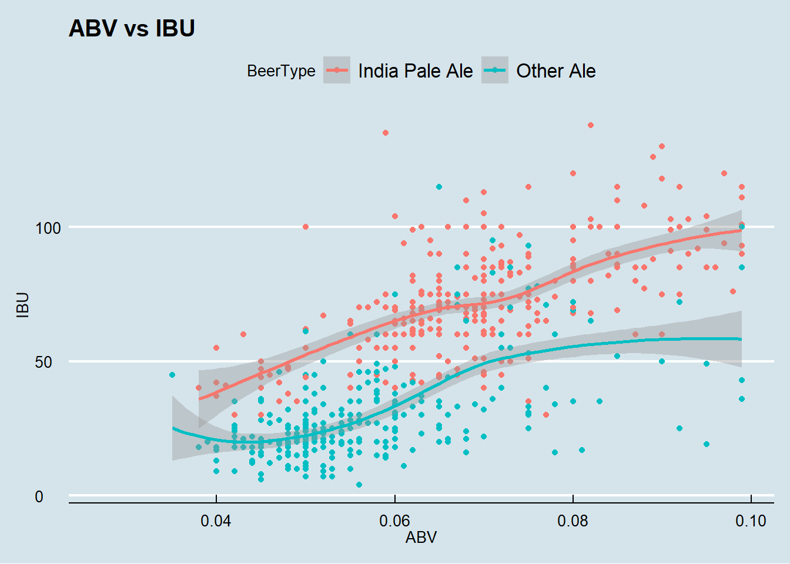
#As this graph shows, it appears that IPAs are significanlty higher in IBu score and at least marginaly higher in alcohol by volume. #Question 9 - Other Insights - ABV by Ounces?
# One more thing we explored was whether or not there was a clear relationship between the ounces of the beer and its ABV.
beerbybrew2$Ounces<-as.factor(beerbybrew2$Ounces)
#beerbybrew2=beerbybrew%>%filter(!is.na(BeerType) & !is.na(IBU) & !is.na(ABV))
#beerbybrew2=beerbybrew%>%filter(BeerType=="India Pale Ale" | BeerType=="Other Ale")
beerbybrew2%>%ggplot(mapping=aes(x=Ounces, y=ABV))+geom_boxplot(fill="red")+ggtitle("ABV by Ounces")+theme_economist()## Warning: Removed 35 rows containing non-finite values (stat_boxplot).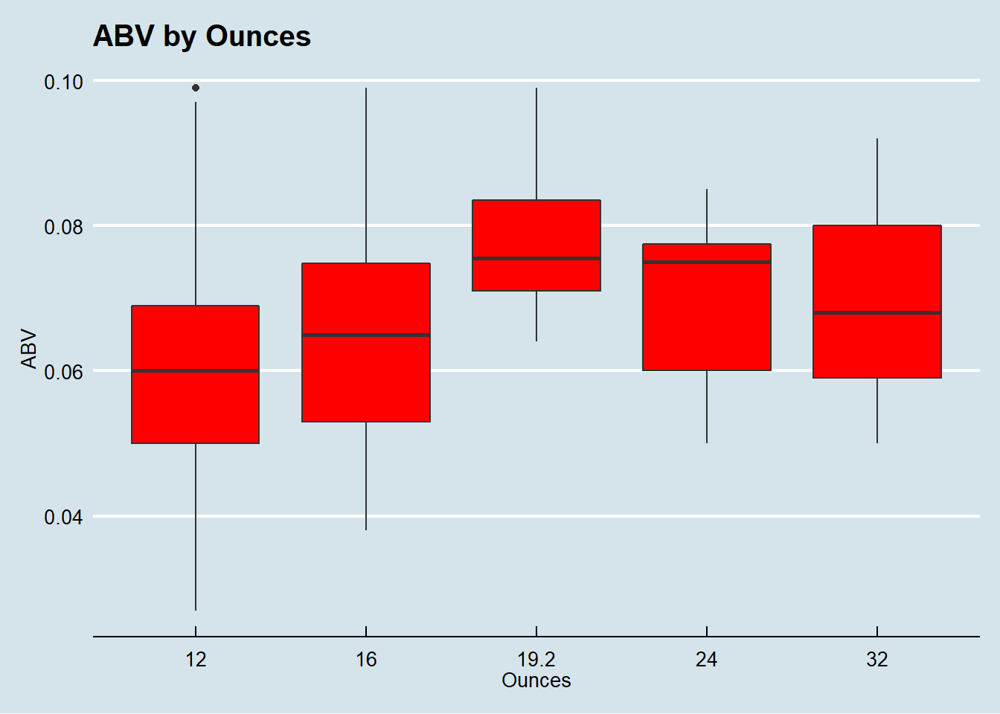
#We can see that it the median ABV value appears to increase as ounces increase, with the execption of 24 and 32 ounces. However, more in-depth statistical testing would need to be done in order to determine if there was a significant relationship. #Question 9 - Other Insights - Median ABV by State (continued)
#In order to more clearly visualize the median ABV value for each state, we believed a heat map of the United States would be more efficient.
#Get Map Data
states<-map_data("state")
#Test plot of US
#states%>%ggplot(mapping=aes(x=long, y=lat, group=group, fill=region))+geom_polygon(fill="white", color="black")
#Get State names instead of abbreviations
abvmed1=abvmed
abvmed1$State<-as.character(abvmed1$State)
#Get rid of white space on left of abbreviation
abvmed1=abvmed1%>%mutate(State=str_trim(State))
#Do mutation on ABV percentage and getting state full name
abvmed2=abvmed1%>%mutate(State=abbr2state(State), ABV.median=ABV.median*100)
#head(abvmed2)
#changing state to lowercase
abvmed3=abvmed2%>%mutate(State=tolower(State))
#head(abvmed3)
#left_join to get long and lat for each stae
beerloc=left_join(states,abvmed3, by=c("region"="State"))
#Change ABV.Median to factor
beerloc$ABV.median<-as.numeric(beerloc$ABV.median)
#Plot ABV median by state
beerloc%>%ggplot(mapping=aes(x=long, y=lat, group=group, fill=ABV.median))+geom_polygon(color="black")+coord_map(projection="albers", lat0=39, lat1=45)+labs(title="Median ABV by State")+theme_map()+labs(fill="Median ABV %")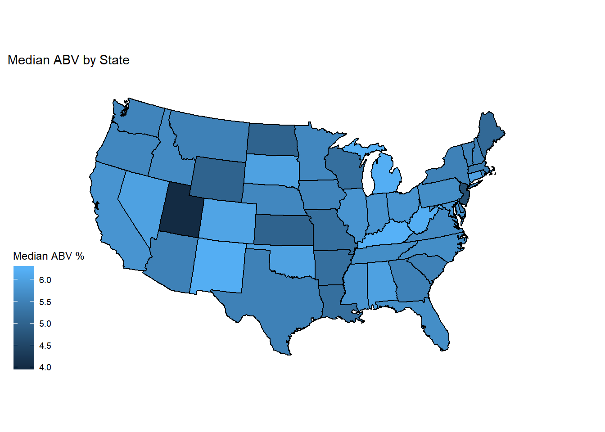
#The map clearly shows thte states with higher ABV values. ONe state that sticks out is Utah--it is significantly darker than the rest of the states. #Question 9 - Other Insights - Heat Map of Breweries by State
#Heat map for breweries by state
#One thing we thought might be beneficial to the committee is to see the population density of the breweries based on the date you had supplied us with. It was stated in Anheuser-Busch's 2018 Annual Report that organic growth remainsthe number one goal. However, prudnet acquisitions were in the top three strategies.
#Count the number of breweries per state
library(plyr)## -------------------------------------------------------------------------## You have loaded plyr after dplyr - this is likely to cause problems.
## If you need functions from both plyr and dplyr, please load plyr first, then dplyr:
## library(plyr); library(dplyr)## -------------------------------------------------------------------------##
## Attaching package: 'plyr'## The following object is masked from 'package:maps':
##
## ozone## The following objects are masked from 'package:dplyr':
##
## arrange, count, desc, failwith, id, mutate, rename, summarise,
## summarize## The following object is masked from 'package:purrr':
##
## compactbrewst=count(brew$State)
#brew=brew%>%as.numeric(as.character(brew$freq))
#Get State names instead of abbreviations
brewst$x<-as.character(brewst$x)
################################MAKE A COLUMN OF BREWERY COUNT BY STATE###################################################3333
#Get rid of white space on left of abbreviation
brewst1=brewst%>%mutate(x=str_trim(x))
#Do mutation on ABV percentage and getting state full name
brewst1=brewst1%>%mutate(state1=abbr2state(x))
#head(brewst1)
#changing state to lowercase
brewst1=brewst1%>%mutate(state2=tolower(state1))
#head(brewst1)
brewst2=brewst1%>%select(state2, freq)
#head(brewst2)
#left_join to get long and lat for each stae
brewstate=left_join(states,brewst2, by=c("region"="state2"))
#head(brewstate)
#Change ABV.Median to factor
brewstate$freq<-as.numeric(brewstate$freq)
#Plot ABV median by state
brewstate%>%ggplot(mapping=aes(x=long, y=lat, group=group, fill=freq))+geom_polygon(color="black")+coord_map(projection="albers", lat0=39, lat1=45)+labs(title="Number of Breweries by State")+theme_map()+labs(fill="# of Breweries")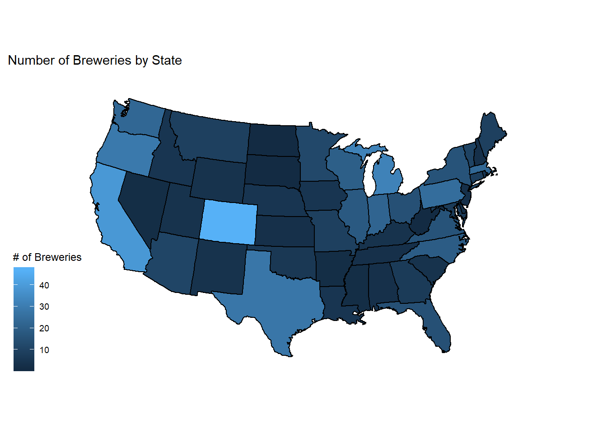
#Looking at the heat map below, we believe it may be benneficial to this commitee given acquisition being a main corporate strategy. One example is Colorado. It has clearly the highest number of craft breweries, and is also a state where Budweiser is lacking market share compared to Coors. A potential acquisition strategy could be to invest in both early-stage and established craft breweries that show potential in expanding the product line in not only Colorado, but the whole mountan region in general. Give the purchasing power of Budweiser, and the small size of most craft breweries, it would be relatively easy for Budweiser to invest in multiple breweries without the affecting revenue reinvestment towards Budweiser's number one goal of organic growth. #Conclusion
#Again, thank you all very much for your time today. We know that you are very busy individuals and we hope that this was beneficial. To recap what we’ve concluded from this study: #1. we’ve looked at the numbe of breweries in each state. The states with the largest number of breweries include: Colorado, California, and Michigan. #2. We’ve looked at the states with the highest ABV and IBu values: Colorado with the highest ABV at 12.8 and Oregon with the highest IBU value of 138. #3. We’ve looked at the summary statistics of the ABV value, noting that there is a mean of 5.99% and that a majorit of the craft beers have an ABV of 7% or less. #4. We’ve determined that there seems to be a positive linear relationship between IBU and ABV values, #5. We’ve utilized a model that will allow us to identify whether a beer is an IPA or Other Ale with approximatley 89% accuracy. #6. We’ve compared the k-NN model with an alternative model to see which would be better-suited. #7. We’ve Compared the ABV of the beers versus the ounzes they are served. #8. Finally, we have provided the committee with a map of the brewery concentrations in each state in order to facilite one of Budweiser’s main strategic initiatives of acquisition.
#Thank you all again and we hope you have a great weekend.